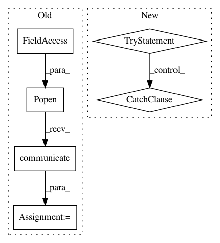

de124673e0f54ed593884de78e5435b6c1119d9b,examples/transcribe.py,,decode_audio,#Any#,23
Before Change
def decode_audio(in_filename, **input_kwargs):
p = subprocess.Popen(
(ffmpeg
.input(in_filename, **input_kwargs)
.output("-", format="s16le", acodec="pcm_s16le", ac=1, ar="16k")
.overwrite_output()
.compile()
),
stdout=subprocess.PIPE,
stderr=subprocess.PIPE
)
out = p.communicate()
if p.returncode != 0:
sys.stderr.write(out[1])
sys.exit(1)
return out[0]
After Change
def decode_audio(in_filename, **input_kwargs):
try:
out, err = (ffmpeg
.input(in_filename, **input_kwargs)
.output("-", format="s16le", acodec="pcm_s16le", ac=1, ar="16k")
.overwrite_output()
.run(capture_stdout=True, capture_stderr=True)
)
except ffmpeg.Error as e:
print(e.stderr, file=sys.stderr)
sys.exit(1)
return out
def get_transcripts(audio_data):
In pattern: SUPERPATTERN
Frequency: 3
Non-data size: 6
Instances
Project Name: kkroening/ffmpeg-python
Commit Name: de124673e0f54ed593884de78e5435b6c1119d9b
Time: 2018-06-02
Author: karlk@kralnet.us
File Name: examples/transcribe.py
Class Name:
Method Name: decode_audio
Project Name: vatlab/SoS
Commit Name: bc823da8c38eae03a311d0ba0627b23b84939b56
Time: 2017-07-30
Author: ben.bog@gmail.com
File Name: src/sos/actions.py
Class Name: SoS_ExecuteScript
Method Name: run
Project Name: studioml/studio
Commit Name: 580a99bfb656a6f6b99133c9986252e619713fe1
Time: 2017-08-15
Author: peter.zhokhov@Peters-MBP.geneticfinance.com
File Name: studio/model.py
Class Name: FirebaseProvider
Method Name: _get_experiment_logtail